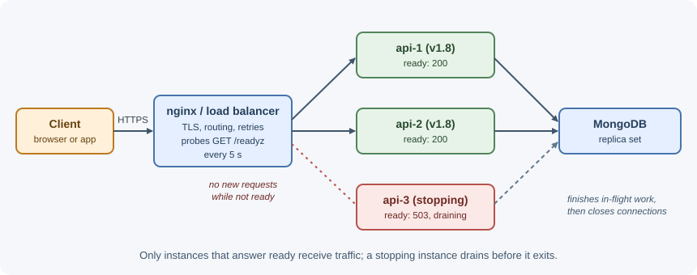
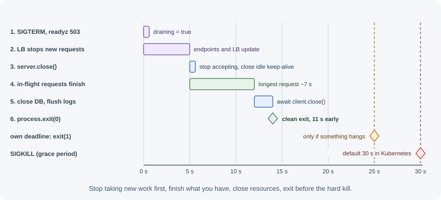
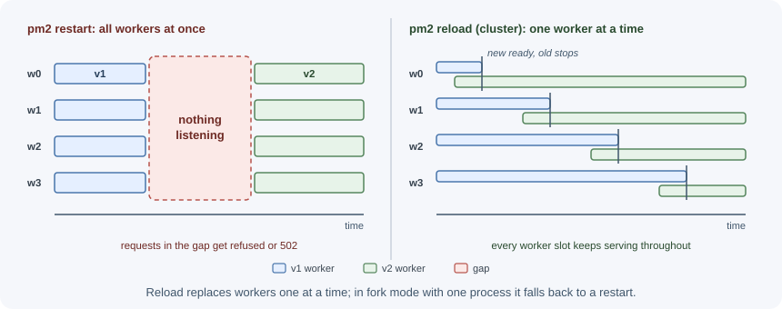

Deploying Backend Services¶
Deploying a backend service means getting a new version of a long-running server process (for TaskFlow API, a Node.js Express app talking to MongoDB) onto machines, putting it behind a proxy or load balancer, and switching traffic to it without dropping requests. This lesson covers the main ways to run a Node API, the request path through a reverse proxy, health checks, graceful shutdown, zero-downtime restarts with PM2 and systemd, migrations at deploy time, compiled single-binary deploys, and how to write deploy scripts that are safe to run twice.
The strategies in the next lessons (rolling, blue-green, canary) all rely on the mechanics here. A canary is worthless if every instance drops its in-flight requests when it stops.
Why it matters¶
A server process is not a static file. When it stops, it may be in the
middle of 200 requests, holding database connections, and owning queued
work. When it starts, it may need seconds to connect to its database and
warm caches. If the deploy process ignores this, every release produces a
burst of 502 Bad Gateway and connection-reset errors, users retry,
clients double-submit, and teams learn to deploy only at night.
Getting the mechanics right is cheap: a readiness endpoint, a signal handler, a few timeouts that agree with each other, and a deploy script that checks its own work. With them, a small team can deploy during the day, many times a day, without anyone noticing.
Real-world usage¶
- Twelve-Factor App (disposability). Factor IX,
Disposability, says processes
should start fast and shut down gracefully when they receive
SIGTERM: a web process stops listening, lets current requests finish, and exits. Every platform from Heroku to Kubernetes assumes this behavior. - Express documentation. The Express guide
Health checks and graceful shutdown
shows the same pattern for Node: on
SIGTERM, stop accepting new connections, finish existing ones, close resources, then exit. - Kubernetes. The
pod termination documentation
explains that the kubelet sends
SIGTERM, waits for the grace period (30 seconds by default), and then sendsSIGKILL, while the pod is removed from Service endpoints in parallel. That race is why a short delay beforeserver.close()is common. - AWS Elastic Load Balancing. Target groups have a deregistration delay (300 seconds by default) during which a target being removed receives no new requests but keeps its in-flight ones: connection draining implemented in the load balancer.
Popular tools and providers: PM2, systemd, Docker, Kubernetes, Amazon ECS and Fargate, Google Cloud Run, Azure Container Apps, Fly.io, Render, Heroku, AWS Lambda, nginx, HAProxy, Caddy, Traefik, and cloud load balancers.
How it works¶
Ways to run a Node API¶
| Option | You manage | Deploy unit | Scaling | Good for |
|---|---|---|---|---|
| VM + process manager (systemd, PM2) | OS, runtime, patches, proxy, deploy scripts | Release directory or tarball | Add VMs behind a load balancer; PM2 cluster per VM | Small teams, steady load, full control |
| Containers on VMs (Docker, Compose) | OS and Docker host, orchestration by hand | Container image | Manual or scripted | One or a few hosts, reproducible runtime |
| Orchestrator (Kubernetes, ECS, Nomad) | Cluster or service definitions | Container image + manifest | Autoscaling on metrics | Many services, many instances |
| PaaS / serverless containers (Cloud Run, App Runner, Fly.io, Render, Heroku) | App code and settings | Image or source push | Platform scales instances, sometimes to zero | Teams that want minimal operations |
| Functions (AWS Lambda, Cloud Functions) | Handler code | Function package | Per request, automatic | Spiky or event-driven work |
The further down the table, the less you operate and the less you control.
The deploy mechanics below exist on every row; on a PaaS the platform
performs them for you, so you must still give it a health endpoint and
handle SIGTERM.
The request path¶

A reverse proxy (nginx, or a cloud load balancer) sits in front of the app instances because it does several jobs the app should not:
- terminates TLS and holds the certificates,
- spreads requests across instances and stops sending to unhealthy ones,
- retries a failed connection on another instance,
- buffers slow clients so the Node process is not held open by them,
- adds request IDs and forwarded headers (
X-Forwarded-For,X-Forwarded-Proto), and enforces body size and timeouts.
The app must then trust exactly one proxy hop
(app.set("trust proxy", 1) in Express) so req.ip and req.protocol
are correct. See nginx
and load balancing
for the proxy itself.
Health checks: liveness, readiness, startup¶
| Check | Question it answers | On failure | Should it check the database? |
|---|---|---|---|
Liveness (/livez) |
Is this process stuck beyond repair? | Restart the process | No. A database outage would restart every instance, which fixes nothing |
Readiness (/readyz) |
Should this instance get new requests now? | Stop routing to it, do not restart | Yes, cheaply (a ping), plus the draining flag |
| Startup | Has it finished starting? | Keep waiting, up to a limit | Usually the same as readiness |
Rules that prevent most health-check incidents:
- Keep checks fast and cheap (a ping, not a query over a large collection), with a timeout shorter than the probe interval.
- Never put dependency checks in liveness. A slow database plus a liveness check that queries it makes the orchestrator kill healthy processes in a loop.
- Return
503from readiness while draining, so the load balancer stops routing to the instance before it closes. - Do not require authentication on probe endpoints, but do not expose details either; serve them on an internal port or path if possible.
In Kubernetes these map directly to livenessProbe, readinessProbe, and
startupProbe (see
health probes and rolling updates).
Graceful shutdown¶

The sequence, in order:
- Receive the signal. Kubernetes, Docker, and systemd send
SIGTERM. PM2 sendsSIGINTby default. Handle both. - Fail readiness. Set a
drainingflag so/readyzreturns503. - Wait briefly. Load balancers and Kubernetes endpoint lists update asynchronously; new requests may still arrive for a few seconds. A delay of 5 to 10 seconds avoids refusing them.
- Stop accepting connections.
server.close()stops listening. Since Node 19 it also closes connections that are idle at that moment. - Let in-flight requests finish.
close()calls back only when every connection is gone. A keep-alive connection that becomes idle afterclose()stays open untilkeepAliveTimeout, so keep callingserver.closeIdleConnections()(Node 18.2+) while draining. - Close resources. MongoDB client, Redis, message consumers (stop consuming first, finish the current message), log and trace exporters.
- Exit with code 0.
- Enforce your own deadline. If anything hangs, exit with code 1 a
few seconds before the platform's
SIGKILL, so the logs say why.
Timeouts must agree with each other:
drain delay (5 s) + longest request (~10 s) + cleanup (~2 s)
< your own deadline (25 s)
< platform grace period (Kubernetes terminationGracePeriodSeconds: 30;
PM2 kill_timeout; systemd TimeoutStopSec; ECS stopTimeout)
Two container-specific traps: the process must be PID 1 or have an init
that forwards signals (npm start as PID 1 may not pass SIGTERM to
Node; use CMD ["node", "src/server.js"] or docker run --init), and
the Dockerfile CMD must use the exec form so no shell sits in between.
See writing production Dockerfiles.
Keep-alive timeouts between the proxy and Node¶
Node closes idle keep-alive connections after server.keepAliveTimeout
(5 seconds by default). Load balancers keep idle connections to targets
much longer (the AWS Application Load Balancer idle timeout defaults to
60 seconds). If Node closes a connection at the same instant the load
balancer sends a new request on it, the request fails with a 502.
Set the server's keep-alive timeout longer than the proxy's idle
timeout, for example 65 seconds, so the proxy always closes first.
Zero-downtime restarts¶
With a single process, a restart always has a gap: the old process has stopped listening and the new one is not ready yet. Zero downtime needs a second process to carry traffic during the switch.

- PM2 cluster mode. PM2 runs several Node workers through the Node
clustermodule, all sharing one port.pm2 reloadreplaces them one at a time: it starts a new worker, waits until it is online (withwait_ready, until the worker callsprocess.send("ready"), up tolisten_timeout), then stops the old one withSIGINT, sendingSIGKILLafterkill_timeout(about 1.6 seconds by default, so raise it).pm2 restartstops and starts everything at once. In fork mode, reload behaves like restart. - systemd.
systemctl restartis stop then start, with a gap. With socket activation, a.socketunit owns the listening socket and passes it to the service; while the service restarts, the kernel queues new connections instead of refusing them, and Node can listen on the inherited descriptor (server.listen({ fd: 3 })). Requests wait during startup rather than fail, but in-flight requests on the old process still need a graceful shutdown. Most teams run two or more instances behind a proxy instead. - Multiple instances behind a load balancer. Take one instance out (drain), deploy to it, wait for readiness, put it back, repeat. This is a rolling deployment, covered in rolling, blue-green, and canary.
- Orchestrators. Kubernetes Deployments do the same with
maxSurgeandmaxUnavailable; ECS uses minimum and maximum healthy percent.
Capacity check for a rolling restart: four instances each handle 250 requests per second and peak traffic is 800. Removing one instance leaves 750, which is below peak, so a one-at-a-time roll during peak overloads the rest. Either surge first (start a fifth instance before stopping one) or deploy outside peak.
Running database migrations at deploy time¶
| Approach | How | Risk |
|---|---|---|
| Separate pipeline step or job before rollout | npx migrate-mongo up or npx prisma migrate deploy once, then roll out |
Clean; the migration must be compatible with the old code still running |
| On application startup | Every instance runs migrations as it boots | Several instances race; slow migrations delay readiness; needs a lock |
| Kubernetes init container | Runs before each pod's app container | Same race as startup, multiplied by replica count |
| Separate Kubernetes Job or Helm hook | One job per release, rollout waits for it | Good; failures must stop the rollout |
The safe default is a single migration step before the rollout, with the migration itself written to work with both the old and the new code, because during any rolling or canary deploy both versions run at once. Destructive steps (dropping a column) run in a later release. See zero-downtime database migrations.
Compiled single-binary deploys¶
Some backends ship as one executable: Go binaries, bun build --compile,
deno compile, and Node's single executable applications. The source code
and dependencies are embedded in the binary at build time. Three
consequences:
- Pulling code is not deploying.
git pullon the server changes the source files but not the running binary. Until you rebuild and restart, the old code serves, including old routes, so new endpoints return 404 even though the code "is on the server". - Configuration loading may differ. A compiled binary reads
environment variables at runtime, but whether it auto-loads a
.envfile depends on the tool and version (recent Bun versions do by default and offer--no-compile-autoload-dotenv; Go never does). Pass configuration through the process manager or orchestrator so behavior does not depend on the working directory. - Verify what runs. Bake the version and commit into the binary and
expose them at
/version; the deploy is not done until that endpoint reports the new commit.
Deploy scripts and idempotency¶
A deploy script should be safe to run twice, safe to interrupt, and able to undo itself:
- Idempotent: running it again with the same version changes nothing
harmful (it reuses the existing release directory, and
reloadof the same code is harmless). - Atomic switch: prepare the new release completely in its own directory, then switch with one atomic operation (renaming a symlink).
- Locked: two deploys at once must be impossible (
flock, or the CIconcurrencysetting). - Verified: after switching, wait for readiness and check
/version. - Reversible: keep the last few releases on disk and switch back automatically if verification fails.
- Fail-fast:
set -euo pipefailin bash so a failed step stops the script instead of continuing with half a deploy.
When to use and when not to use¶
| Situation | Reasonable choice |
|---|---|
| One small API, low traffic, small team | One or two VMs with PM2 cluster mode or systemd, nginx in front |
| Need for reproducible runtime across machines | Containers, even on plain VMs with Docker Compose |
| Several services, autoscaling, many deploys a day | Kubernetes, ECS, or a serverless container platform |
| Very spiky or event-driven work | Functions or scale-to-zero containers |
| Long-lived connections (WebSockets) | Instances with long drain times, connection-aware load balancing; avoid platforms with short request limits |
Do not:
- run a single instance in production if downtime during deploys is not acceptable;
- choose Kubernetes for one small service only because large companies use it; the operational cost is real;
- rely on a platform to make shutdown graceful if the app ignores
SIGTERM.
Practical examples¶
An Express server with health checks and graceful shutdown¶
// src/server.js: TaskFlow API with health checks and graceful shutdown
import { readFileSync } from "node:fs";
import express from "express";
import { MongoClient } from "mongodb";
const PORT = Number(process.env.PORT ?? 3000);
const DRAIN_DELAY_MS = Number(process.env.DRAIN_DELAY_MS ?? 5_000);
const SHUTDOWN_TIMEOUT_MS = Number(process.env.SHUTDOWN_TIMEOUT_MS ?? 25_000);
// Written by CI at build time: {"version":"1.8.0","commit":"9f3e1c2"}
const buildInfo = JSON.parse(
readFileSync(new URL("../build-info.json", import.meta.url), "utf8"),
);
const mongo = new MongoClient(process.env.MONGODB_URI, {
serverSelectionTimeoutMS: 2_000, // fail health checks fast if the DB is gone
});
const app = express();
app.set("trust proxy", 1); // exactly one proxy (nginx or the load balancer)
let draining = false;
// While draining, ask clients to drop keep-alive connections after this response
app.use((req, res, next) => {
if (draining) res.set("Connection", "close");
next();
});
// Liveness: can the process serve at all? No dependency checks here.
app.get("/livez", (req, res) => res.send("ok"));
// Readiness: should this instance receive new requests right now?
app.get("/readyz", async (req, res) => {
if (draining) return res.status(503).send("draining");
try {
await mongo.db("admin").command({ ping: 1 });
res.send("ready");
} catch {
res.status(503).send("database unavailable");
}
});
// Which build is running? The deploy script checks this.
app.get("/version", (req, res) => res.json(buildInfo));
app.get("/tasks", async (req, res) => {
const tasks = await mongo.db().collection("tasks").find().limit(50).toArray();
res.json(tasks);
});
await mongo.connect();
const server = app.listen(PORT, () => {
console.log(`taskflow-api ${buildInfo.version} listening on ${PORT}`);
process.send?.("ready"); // PM2 wait_ready: this worker may take traffic now
});
// Keep idle connections open longer than the load balancer does (ALB: 60 s)
server.keepAliveTimeout = 65_000;
server.headersTimeout = 66_000;
async function shutdown(signal) {
if (draining) return;
draining = true;
console.log(`${signal} received: draining`);
// Safety net: exit on our own before the platform's SIGKILL
setTimeout(() => {
console.error("graceful shutdown timed out; forcing exit");
process.exit(1);
}, SHUTDOWN_TIMEOUT_MS).unref();
// 1. Readiness now fails; give load balancers time to stop routing here
await new Promise((resolve) => setTimeout(resolve, DRAIN_DELAY_MS));
// 2. Stop accepting connections. close() calls back once every connection
// is gone, so keep closing keep-alive sockets as they become idle.
const closed = new Promise((resolve) => server.close(resolve));
server.closeIdleConnections();
const sweeper = setInterval(() => server.closeIdleConnections(), 1_000);
await closed;
clearInterval(sweeper);
// 3. Release dependencies, then exit cleanly
await mongo.close();
console.log("shutdown complete");
process.exit(0);
}
process.on("SIGTERM", () => shutdown("SIGTERM")); // Kubernetes, Docker, systemd
process.on("SIGINT", () => shutdown("SIGINT")); // PM2 default, Ctrl+C
/liveznever touches MongoDB, so a database outage marks instances not ready instead of restarting all of them.- The idle-connection sweep matters: without it, a client whose
keep-alive socket became idle after
close()keeps the server open for the full 65-second keep-alive timeout. - The deadline timer is
unref()ed so it never keeps a finished process alive.
PM2 in cluster mode¶
// ecosystem.config.cjs
module.exports = {
apps: [
{
name: "taskflow-api",
script: "src/server.js",
cwd: "/srv/taskflow/current",
exec_mode: "cluster",
instances: "max", // one worker per CPU core
wait_ready: true, // wait for process.send("ready")
listen_timeout: 10_000, // ...but no longer than 10 s
kill_timeout: 30_000, // time between SIGINT and SIGKILL
max_memory_restart: "512M",
env_production: {
NODE_ENV: "production",
APP_ENV: "production",
PORT: 3000,
},
},
],
};
# First start, then zero-downtime reloads on every deploy
pm2 start ecosystem.config.cjs --env production
pm2 reload ecosystem.config.cjs --env production --update-env
pm2 save # remember the process list across reboots (with pm2 startup)
kill_timeout must be longer than the app's own shutdown deadline (25
seconds above), otherwise PM2 kills workers mid-drain. --update-env
makes a reload pick up changed environment values.
A systemd unit¶
# /etc/systemd/system/taskflow-api.service
[Unit]
Description=TaskFlow API
After=network-online.target
Wants=network-online.target
[Service]
Type=simple
User=taskflow
WorkingDirectory=/srv/taskflow/current
EnvironmentFile=/etc/taskflow/api.env
ExecStart=/usr/bin/node src/server.js
Restart=on-failure
RestartSec=2
KillSignal=SIGTERM
TimeoutStopSec=30
NoNewPrivileges=true
ProtectSystem=strict
ReadWritePaths=/srv/taskflow/shared
[Install]
WantedBy=multi-user.target
TimeoutStopSec is systemd's grace period before SIGKILL.
EnvironmentFile keeps configuration outside the release directory, and
the hardening options (NoNewPrivileges, ProtectSystem) limit what a
compromised process can do.
nginx in front of two app servers¶
# /etc/nginx/conf.d/taskflow-api.conf
upstream taskflow_api {
server 10.0.1.10:3000 max_fails=3 fail_timeout=10s;
server 10.0.2.10:3000 max_fails=3 fail_timeout=10s;
keepalive 32; # reuse upstream connections
}
server {
listen 443 ssl;
http2 on;
server_name api.taskflow.example.com;
ssl_certificate /etc/letsencrypt/live/api.taskflow.example.com/fullchain.pem;
ssl_certificate_key /etc/letsencrypt/live/api.taskflow.example.com/privkey.pem;
client_max_body_size 5m;
location / {
proxy_pass http://taskflow_api;
proxy_http_version 1.1;
proxy_set_header Connection ""; # required for upstream keepalive
proxy_set_header Host $host;
proxy_set_header X-Forwarded-For $proxy_add_x_forwarded_for;
proxy_set_header X-Forwarded-Proto $scheme;
proxy_set_header X-Request-Id $request_id;
proxy_connect_timeout 5s;
proxy_read_timeout 60s;
proxy_next_upstream error timeout http_502 http_503;
}
}
proxy_next_upstream retries a request on the other server when a
connection fails or a server answers 502/503. By default nginx does
not retry non-idempotent requests such as POST once they were sent to
an upstream, which avoids creating a task twice. Open-source nginx has no
active health checks; it marks a server failed after max_fails errors,
so graceful shutdown on the app side still matters.
A release-directory deploy script for a VM¶
#!/usr/bin/env bash
# scripts/deploy-vm.sh: idempotent, verified deploy of one version to one VM
# usage: deploy-vm.sh 1.8.0
set -euo pipefail
VERSION="$1"
APP_DIR=/srv/taskflow
RELEASE="$APP_DIR/releases/$VERSION"
ARTIFACT="https://artifacts.example.com/taskflow-api/taskflow-api-$VERSION.tar.gz"
# Only one deploy at a time on this machine
exec 9>"$APP_DIR/deploy.lock"
flock -n 9 || { echo "another deploy is running" >&2; exit 1; }
previous=$(readlink -f "$APP_DIR/current" || true)
# 1. Prepare the release in its own directory (skipped if already prepared)
if [ ! -d "$RELEASE" ]; then
rm -rf "$RELEASE.tmp" && mkdir -p "$RELEASE.tmp"
curl -fsSL "$ARTIFACT" | tar -xz -C "$RELEASE.tmp"
(cd "$RELEASE.tmp" && npm ci --omit=dev)
mv "$RELEASE.tmp" "$RELEASE" # appears only when complete
fi
# 2. Backward-compatible migrations (safe while the old version still runs)
(cd "$RELEASE" && npx migrate-mongo up)
# 3. Atomic switch: rename a new symlink over the old one
ln -sfn "$RELEASE" "$APP_DIR/current.tmp"
mv -T "$APP_DIR/current.tmp" "$APP_DIR/current"
# 4. Zero-downtime reload (starts the app if it is not running yet)
pm2 startOrReload "$APP_DIR/current/ecosystem.config.cjs" --env production --update-env
# 5. Verify: ready, and actually running the new version
for _ in $(seq 1 30); do
if curl -fsS http://127.0.0.1:3000/version | grep -q "\"version\":\"$VERSION\""; then
echo "deployed $VERSION"
ls -1dt "$APP_DIR"/releases/*/ | tail -n +6 | xargs -r rm -rf # keep 5
exit 0
fi
sleep 2
done
# 6. Verification failed: switch back and reload the previous release
echo "verification failed; rolling back to $previous" >&2
if [ -n "$previous" ]; then
ln -sfn "$previous" "$APP_DIR/current.tmp"
mv -T "$APP_DIR/current.tmp" "$APP_DIR/current"
pm2 reload "$APP_DIR/current/ecosystem.config.cjs" --env production --update-env
fi
exit 1
Run it twice with the same version and step 1 is skipped, the migration tool finds nothing new to apply, and the reload replaces workers with the same code. That is what idempotent means in practice.
Building a compiled binary that reports its own version¶
# Go: set a package variable at link time
go build -ldflags "-X main.commit=$(git rev-parse --short HEAD)" -o server ./cmd/server
# Bun: bundle the app and runtime into one executable with a build constant
bun build ./src/index.ts --compile \
--define BUILD_COMMIT="\"$(git rev-parse --short HEAD)\"" \
--outfile server
# After installing the new binary and restarting the service
curl -fsS http://127.0.0.1:3000/version
# {"commit":"9f3e1c2"} <- must match the commit you meant to deploy
Best practices¶
- Run at least two instances (or a PM2 cluster) wherever deploys must not drop requests.
- Separate liveness from readiness; keep dependencies out of liveness.
- Handle
SIGTERMandSIGINT: fail readiness, wait, close the server, sweep idle connections, close resources, exit. - Line up timeouts: drain delay plus longest request plus cleanup, below your deadline, below the platform's grace period.
- Set the app's keep-alive timeout above the load balancer's idle timeout.
- Run migrations once per release, before rollout, and only backward-compatible ones.
- Expose
/versionand make verification part of the deploy. - Make deploy scripts idempotent, locked, atomic, and self-reverting.
- Keep the previous release (directory, image, or binary) ready for a fast switch back.
In production¶
- A burst of 502s during every deploy.
Detect: load balancer 5xx and target connection errors spike at
deploy times, then recover. Cause: instances stop without draining,
or receive traffic before they are ready. Fix: add readiness checks,
a drain delay before
server.close(), and roll instances one at a time. - Occasional 502s at low traffic, not tied to deploys.
Detect: load balancer logs show target resets on reused connections,
often after idle periods. Cause: Node's 5-second keep-alive timeout is
shorter than the load balancer's idle timeout. Fix: set
server.keepAliveTimeoutabove the proxy's idle timeout. - The deploy "succeeded" but new endpoints return 404.
Detect:
/versionreports the old commit. Cause: a compiled binary was not rebuilt aftergit pull, or the process manager was never reloaded. Fix: rebuild, reload, and make the deploy script verify/versionbefore reporting success. - Every instance restarts in a loop when the database is slow. Detect: restart counts climb on all instances at once; liveness probe failures in events. Cause: the liveness probe checks the database. Fix: make liveness process-only, move the dependency check to readiness.
- Shutdown always takes the full grace period, then SIGKILL.
Detect: logs show "draining" and nothing after; exit code 137.
Cause: idle keep-alive sockets, open intervals, or an unclosed client
keep the process alive, or
SIGTERMnever reaches Node (npm startas PID 1). Fix: sweep idle connections, close every resource, runnodedirectly or with an init, and keep a forced-exit deadline. - Two instances ran the same migration at the same time. Detect: duplicate-key or lock errors in migration logs at startup. Cause: migrations run on application start in every instance. Fix: run migrations as one pipeline step or job before the rollout.
Important terminology¶
- Reverse proxy: a server in front of the application that receives client requests and forwards them, often terminating TLS.
- Liveness probe: a check that decides whether to restart a process.
- Readiness probe: a check that decides whether to send a process traffic.
- Graceful shutdown: stopping a process without dropping in-flight work.
- Connection draining: letting existing connections finish while sending no new ones; deregistration delay in AWS terms.
- Grace period: time the platform waits between
SIGTERMandSIGKILL. - Cluster mode: running several worker processes that share one port.
- Socket activation: systemd holding a listening socket and passing it to a service, so connections queue during restarts.
- Idempotent deploy: a deploy that can run repeatedly with the same result.
- Single executable: an application compiled with its runtime and code into one binary.
Common mistakes and misconceptions¶
- Believing
pm2 restartis zero-downtime;pm2 reloadin cluster mode is. - Checking the database in the liveness probe.
- Calling
server.close()and assuming it finishes quickly with keep-alive clients. - Leaving PM2's
kill_timeoutat its short default while the app needs 20 seconds to drain. - Running the app as
npm startin a container and wondering whySIGTERMis ignored. - Deploying by
git pullon servers, so what runs depends on what each server happened to pull and build. - Running destructive migrations in the same release that stops using the column.
Revision questions¶
- What is the difference between liveness and readiness, and why must liveness not check the database?
- List the steps of a graceful shutdown in order and explain why a short
delay comes before
server.close(). - Why can
server.close()take as long as the keep-alive timeout, and how do you prevent it? - A load balancer has a 60-second idle timeout and Node uses its default keep-alive timeout. What error appears, and how do you fix it?
- Six instances each handle 200 requests per second; peak traffic is 1,100 requests per second. Can you roll them one at a time during peak without surge capacity? Show the numbers.
- Why is
pm2 reloadzero-downtime in cluster mode but not in fork mode with one process? - Why must migrations that run during a rolling deploy be compatible with the old code?
- A Go service was deployed with
git pulland a restart, but a new route returns 404. What happened?